Naruto Uzumaki
Naruto Uzumaki é um shinobi de Konohagakure,
também sendo a reencarnação atual de Asura e o protagonista homônimo da franquia Naruto.
Ele se tornou o jinchuriki de Kurama no dia de seu nascimento,
um destino que o levou a ser condenado ao ostracismo e ser negligenciado por toda a aldeia
durante toda a sua infância. Depois de entrar para o Time Kakashi,
Naruto trabalhou duro para ganhar o respeito e o reconhecimento da aldeia,
com o sonho de se tornar Hokage. Nos anos seguintes, Naruto torna-se um ninja capaz,
que é eventualmente considerado como um herói,
tanto por parte dos moradores como pelo mundo shinobi em geral.
O objetivo de Naruto em se tornar Hokage foi deixado de lado,
devido a ele querer salvar o seu melhor amigo e companheiro de equipe,
Sasuke Uchiha, que sucumbiu ao ódio e à escuridão, eventualmente,
Naruto consegue cumprir esse objetivo após derrotá-lo em sua batalha final.
Anos depois da Quarta Guerra Mundial Shinobi, Naruto realiza seu sonho e se torna
o Sétimo Hokage, enquanto também se casa com Hinata Hyūga e tem dois filhos com ela,
Boruto e Himawari Uzumaki.
Transformações
| 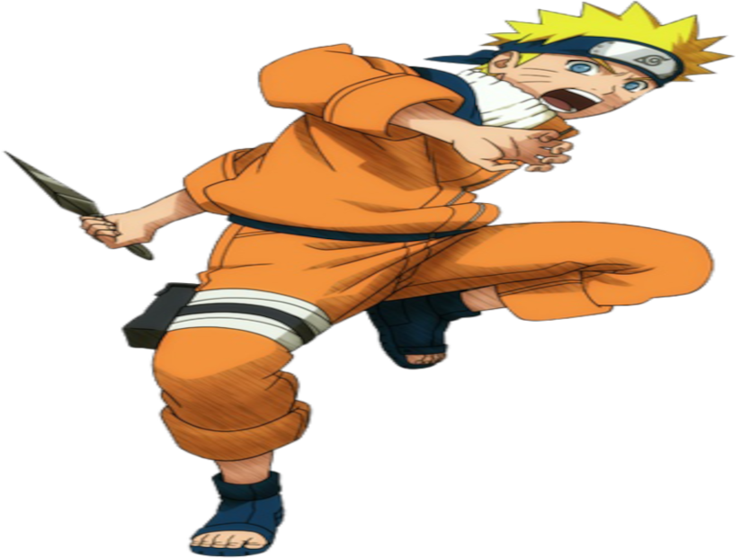 |
.png) |
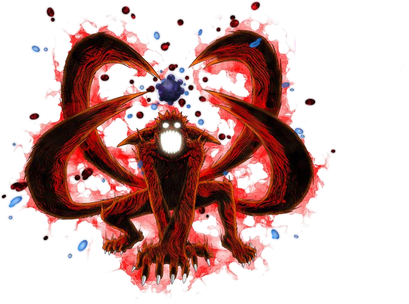 |
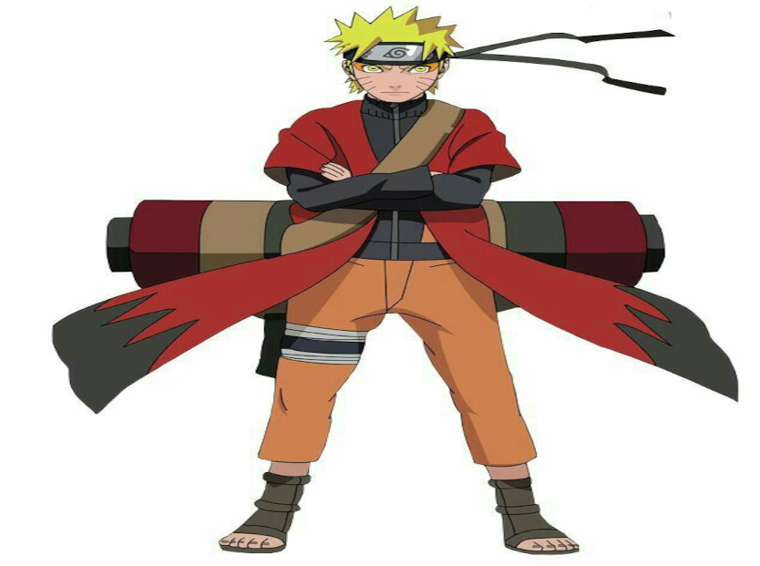 |
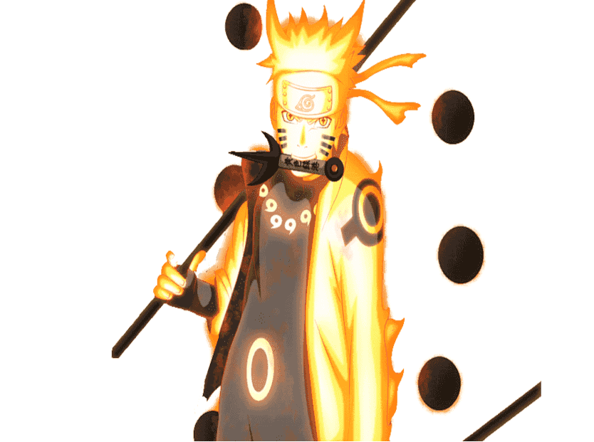 |
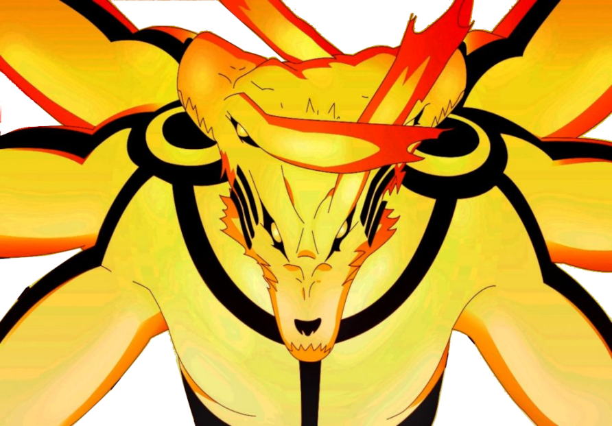 |
Base |
Chakra da Kyuubi |
Manto de Besta com Cauda |
Naruto Modo Sábio |
Sábio dos Seis caminhos |
Kurama Asura |
Equipe 7
Primeiros Membros da Equipe
|
|
Membros Posteriores
|
| 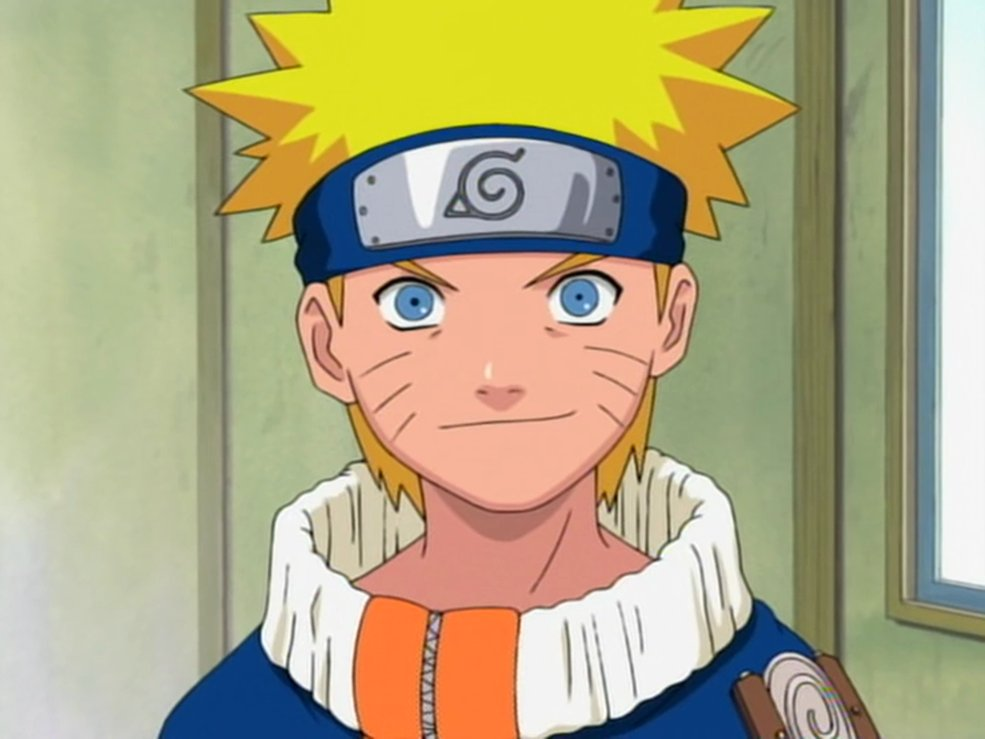 |
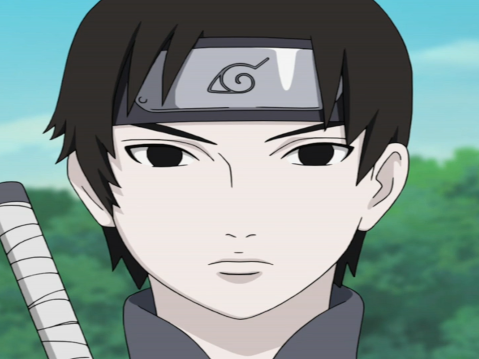 |
| 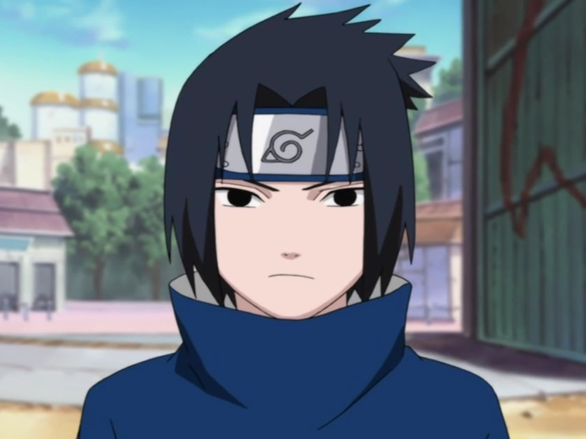 |
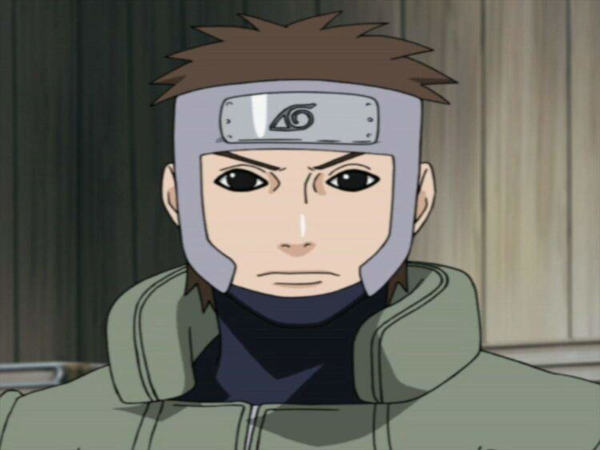 |
| 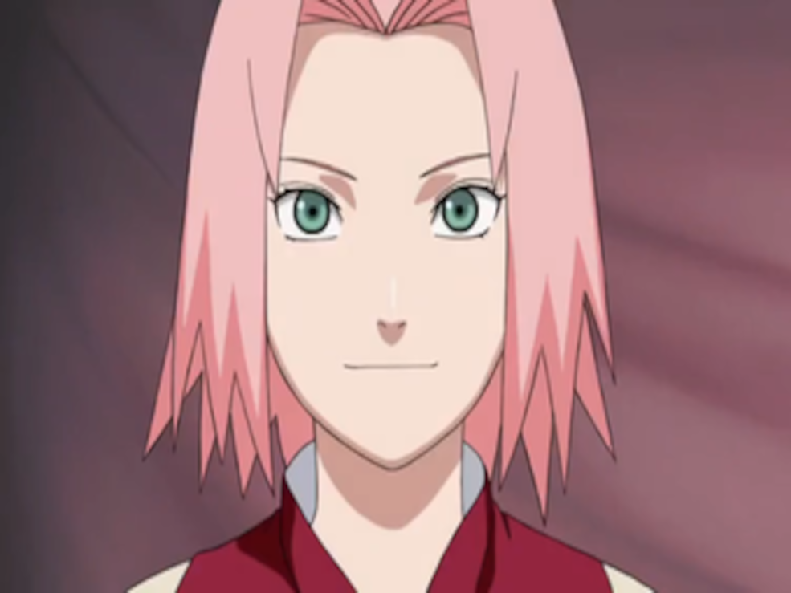 |
|
| 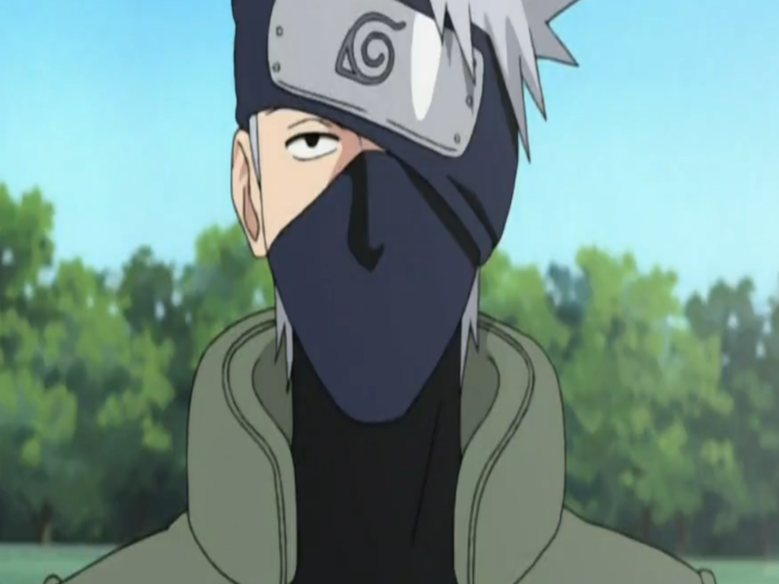 |
|